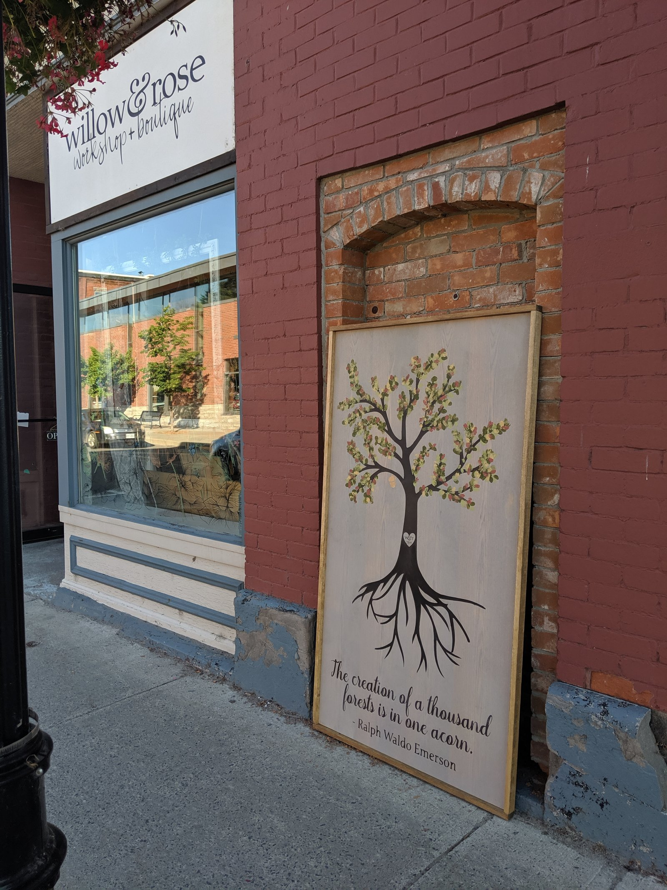
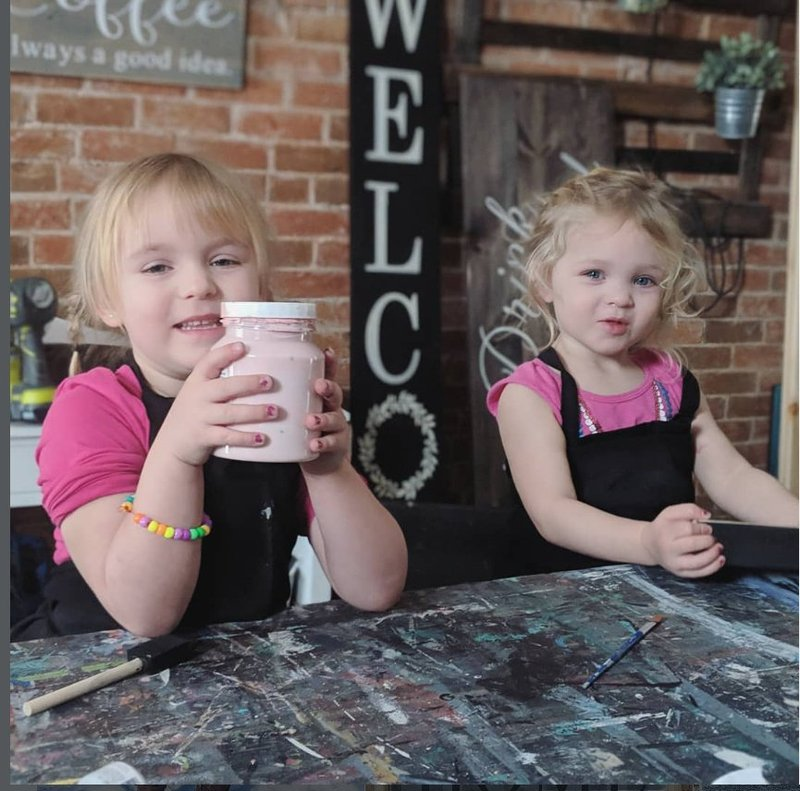
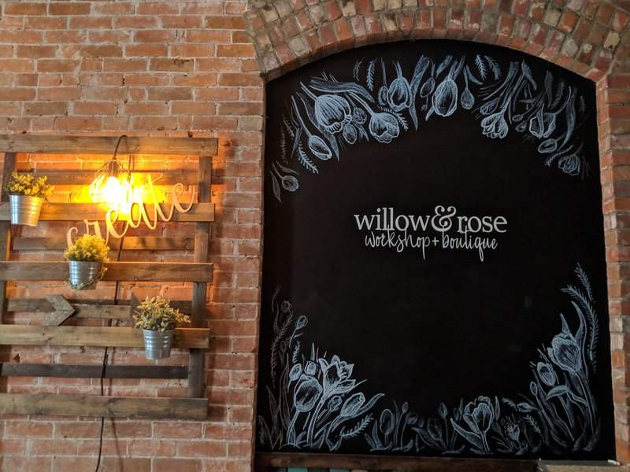
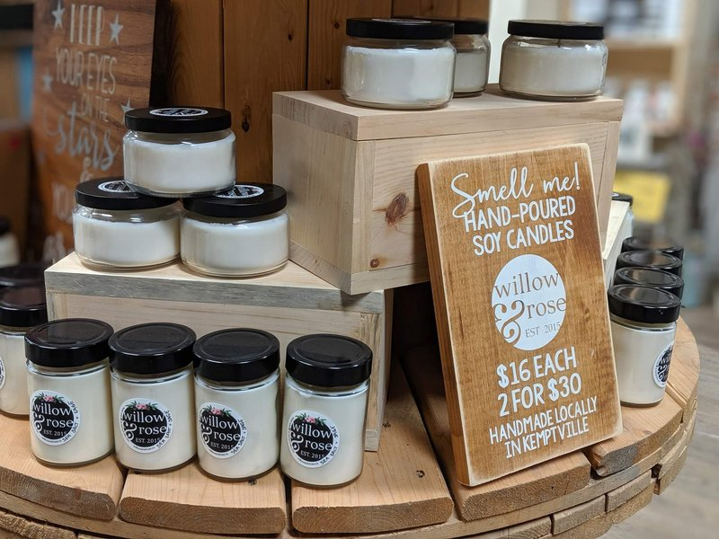
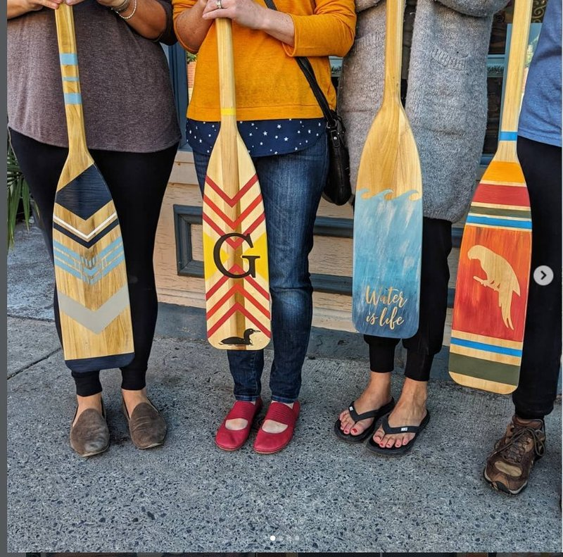

Clean windows aren't the whole experience

When I started my first business, I had not one but two window cleaners. Different companies, both showing up every few days, neither quite aware of the other. Whether I wanted it or not, the outside of my windows stayed spotless — and a ten-dollar invoice would appear, sometimes more than once a week, and the glass would be clean again.
Meanwhile, inside, I was treading water — intensely, constantly. Like a duck: calm on the surface, paddling like mad underneath, and no one ever knew. Business was good, but my website wasn't properly updated, my sign was still temporary, and the back-end pieces I kept meaning to fix were still waiting. I usually had at least one kid in the shop with me, so even when the outside glass was perfect, there were fingerprints and smudges on the inside.




I was doing the same thing with my marketing. Paying out the nose for Facebook ads, paying for radio, forking out donation after donation for visibility, saying yes to every local marketing opportunity that came across my desk. More posts, more reach, more effort to get people looking. And I couldn't even tell you if any of it was converting — because once people came closer, the experience they actually walked into was still patched together. An outdated website. A cold auto-reply. A half-finished profile. A follow-up that never came. A newsletter I always meant to start.
I was paying, constantly, to polish the outside. The inside was where the real work was waiting.
That's how a lot of small-business marketing feels. The outside gets cleaned, again and again, while the experience behind it quietly falls behind.
The Yellow Front Door works on the inside of the window too. We help small businesses make the experience people actually walk into feel clearer, more current, and more connected to the care already happening behind the scenes.
Curious what people meet when they find your business? That's exactly what we look at.
Request a free Drive-By →